Live Quiz for match-day engagement
- Role
- UI/UX & Product Designer
- Platform
- iOS, Android, Web
- Domain
- SportTechFan engagement
- Team
- 2 designers, project manager, developers, QA
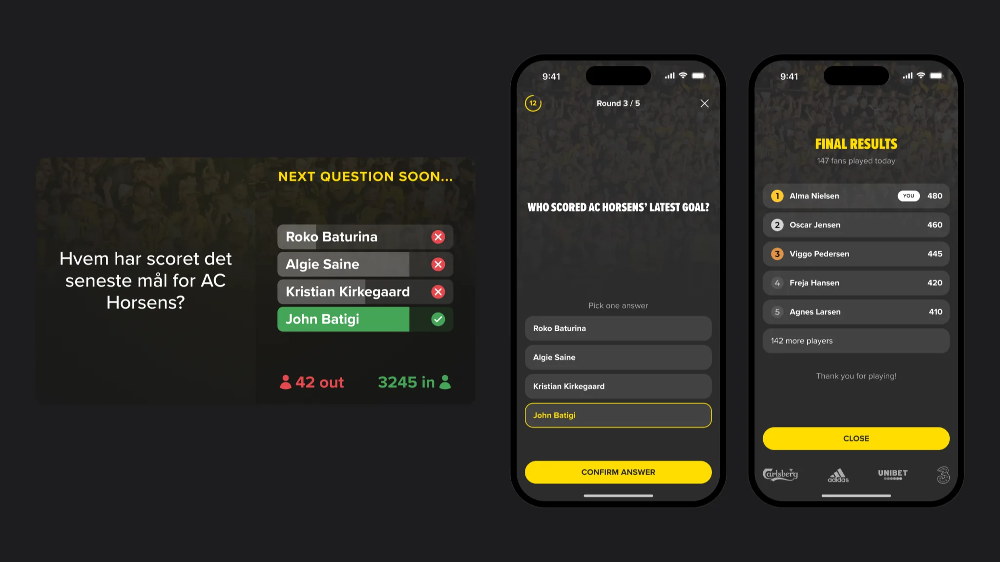
- Problem
- During a live match fans had little reason to open the club app. The quiz had to bring them in without getting in the way of the game.
- What I did
- The quiz end to end: a code on the big screen, one-thumb questions, an ending for every player and live control for the club.
- Result
- 313 fans played at half-time on the first run at AC Horsens. 12–30% of the stadium takes part, as logged-in fans.
A half-time quiz inside the club app: the question is on the big screen, the answers are on the fans’ phones.
Context
Fans already had the club app, but during a match it was easy to forget. People watched the game, not the phone, and had little reason to open the product at that moment.
I designed Live Quiz end to end: the fan flow, every state of the game, the stadium screens and the live control the club team runs it from. I talked details through with the second designer; developers built it and QA tested it.
Constraints
- Fans play standing in a crowd, often with one hand
- The stadium is loud and the network can be slow
- Only people at the match or watching the broadcast should play
- A new fan has to join in seconds, without any setup
Process
I mapped the game before the screens: the three phases the club team controls, and what a fan sees in each of them. Every screen below belongs to one step of this map.
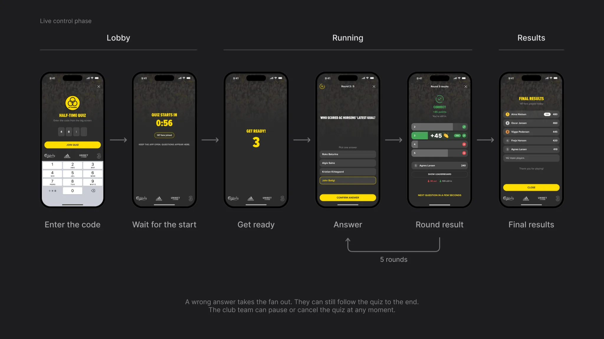
Key decisions
How do only the people at the match get in?
Options: open the quiz to everyone in the app, a QR code, or a short code on the big screen. I chose the code: it is shown only on the stadium screen and on the broadcast, so only people at the match or watching it can play. Cost: one more step before the first question.
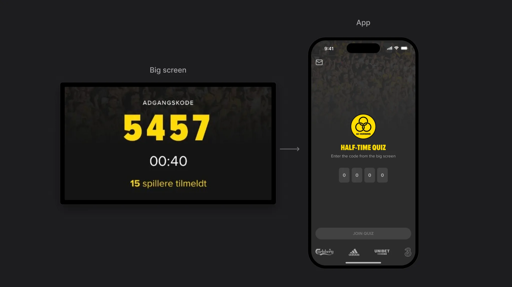
Why not just use Kahoot?
Options: a ready game like Kahoot, or our own quiz inside the club app. We built our own: a Kahoot player is anonymous and leaves when the game ends, while here every player is a logged-in fan who stays in the club app. Cost: team time to build and support the game and its live control.
Join in seconds
A fan types four digits and waits in the lobby with a countdown. There is nothing to set up: the questions arrive on their own.
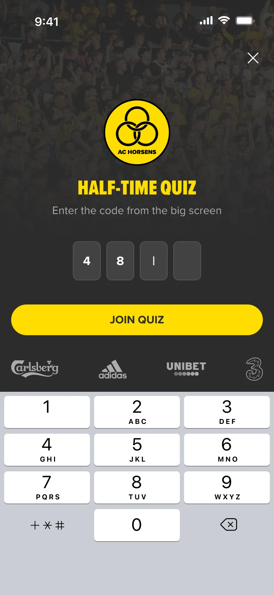
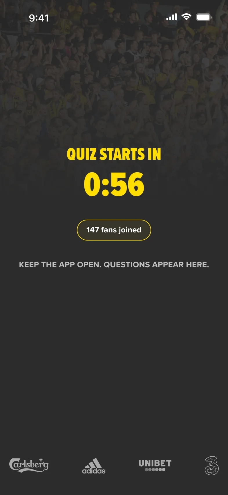
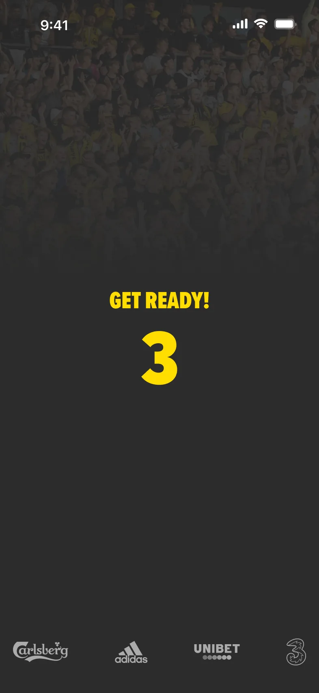
One question, one thumb
One question per screen, big answer buttons and one action at the bottom, all within reach of a thumb. Numbers go in with the phone keypad, not a slider.
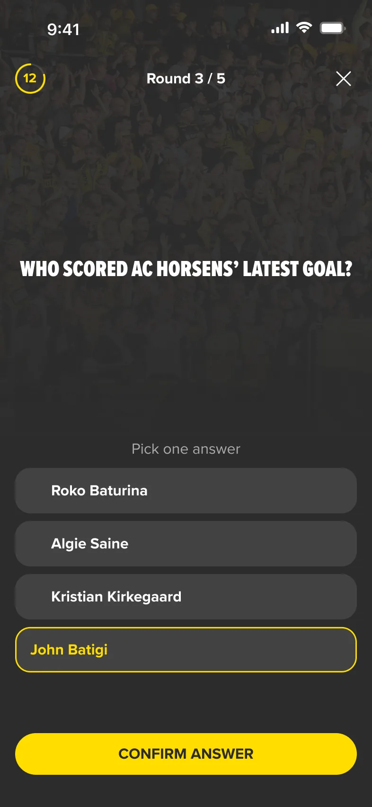
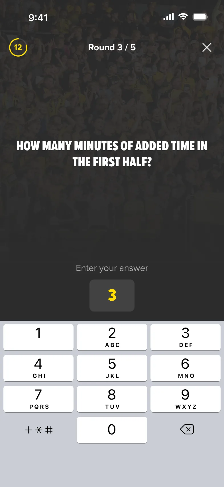
After each round
The fan sees how others answered, their points and whether they are still in. While the answers are counted, the screen says so.
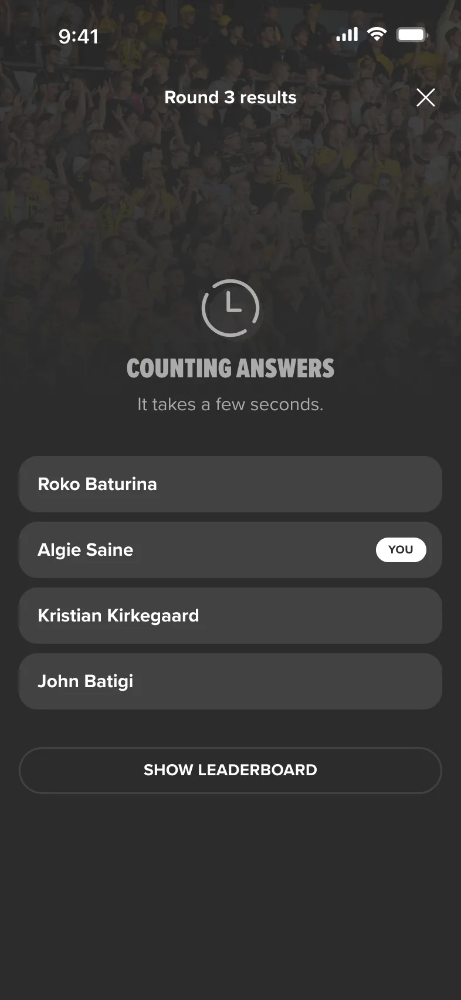
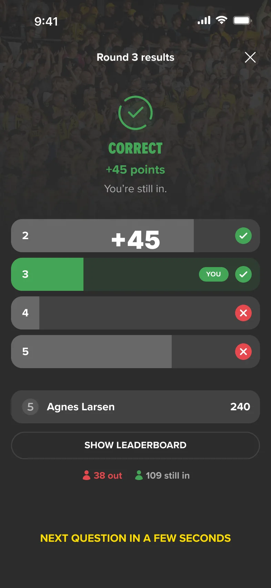
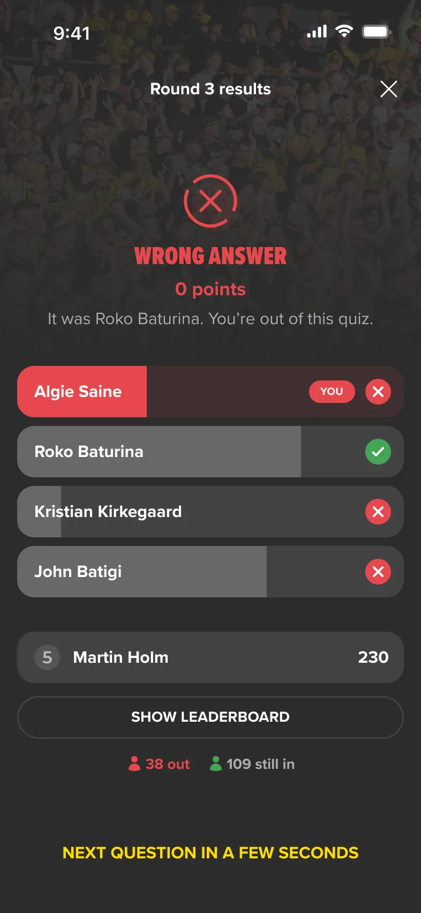
An ending for every player
In Last Man Standing most fans drop out before the end. Each of them still gets a result and the leaderboard, so the quiz never ends on a dead screen.
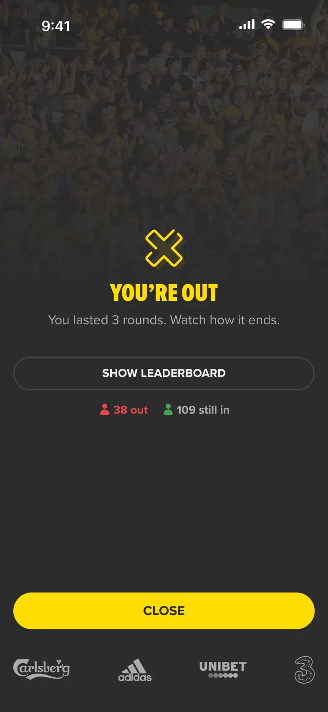
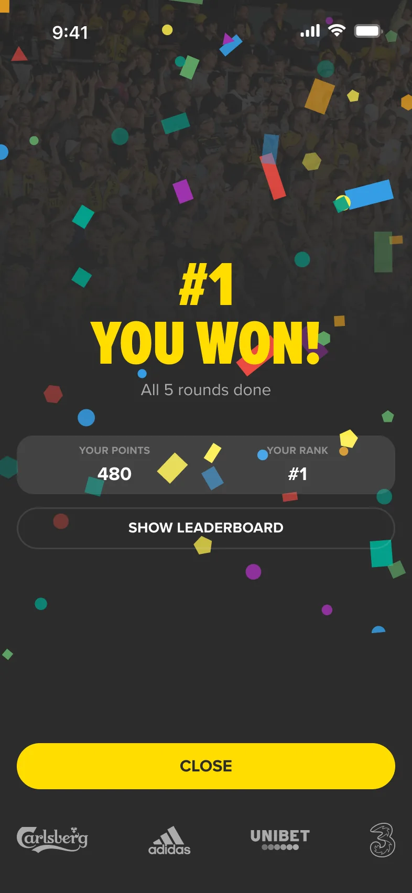
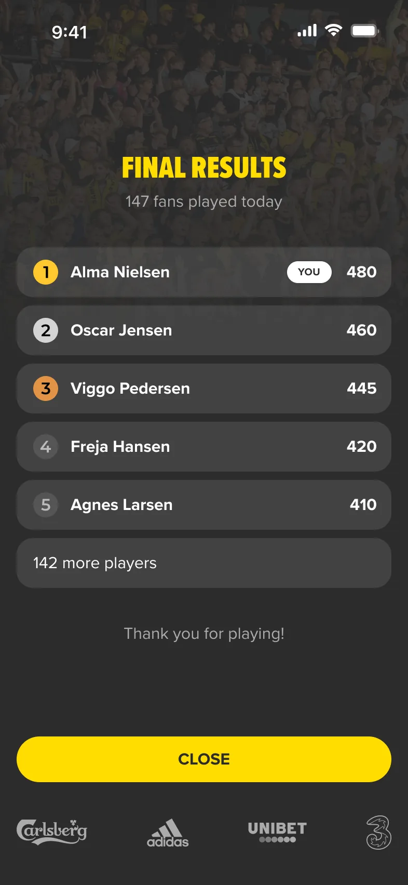
States and edge cases
A live game can stop. The club team can pause or cancel it, and each case has its own screen, so a fan knows the app hasn’t frozen.
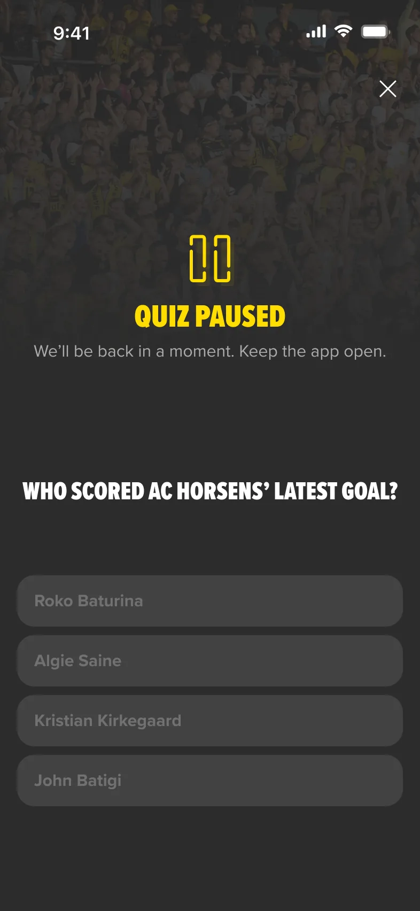
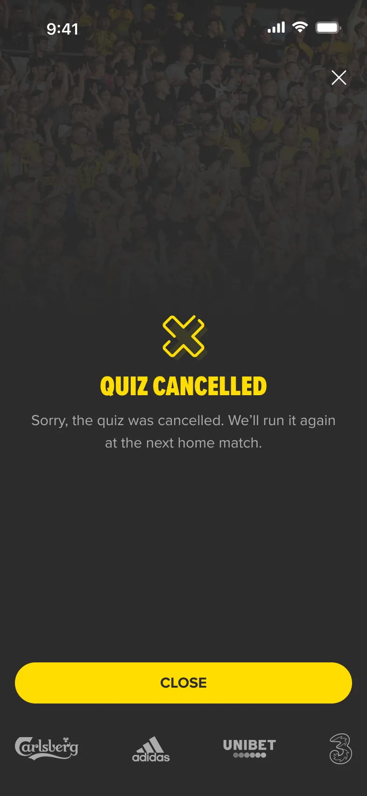
Live control for match day
The club team runs the quiz from a live control view: the phase, the access code, start or extend the countdown, and a preview of the big screen. The work here was the states — lobby, running, results — not a full CMS.
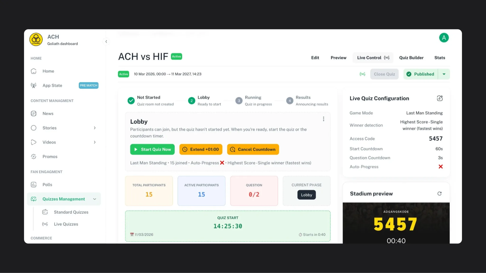
Result
Platform results. Product numbers, not personal ones.
313
fans played live at half-time on the first run at AC Horsens
12–30%
of the people in the stadium take part
~300
new fan profiles per home game. Example from Sports Innovation: 2,000 fans × 15%
Every player is a logged-in fan, so each home match adds profiles the club can reach again (Sports Innovation case). My part was the quiz these numbers came from: joining, playing and the live control behind it.
What I learned
- A code on the big screen does two jobs: it gets fans in fast and keeps the game for people who are watching the match.
- In a live game every pause needs its own screen. Counting, paused and cancelled are what fans see when the game stalls.
- The quiz was only half the product. The club team needed its own live control to run it on match day.